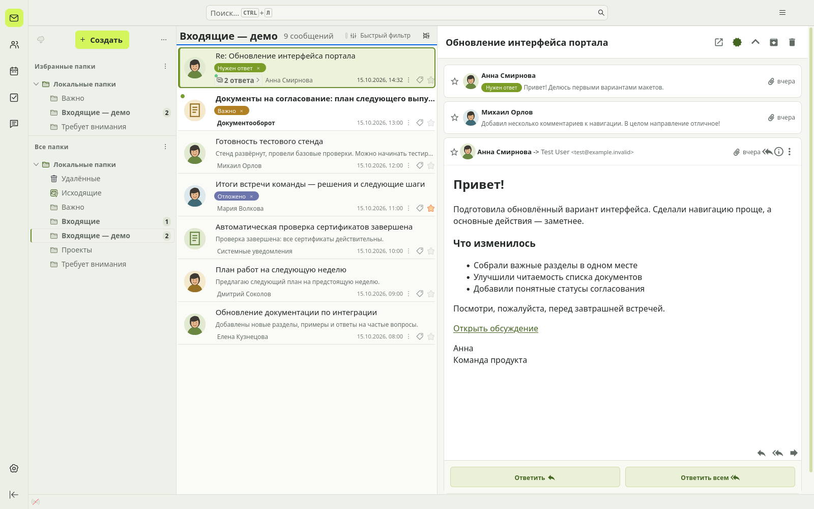
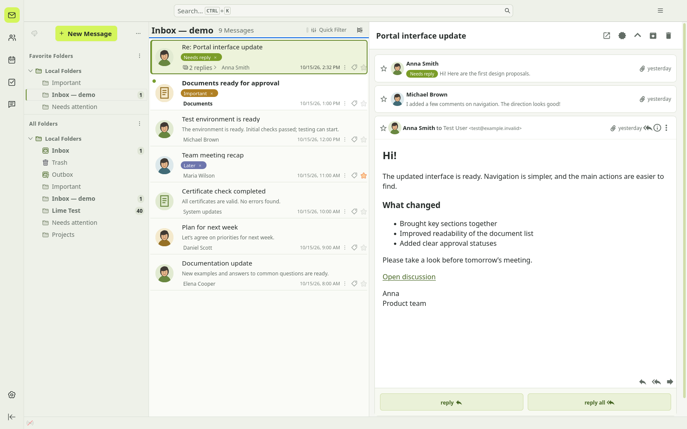
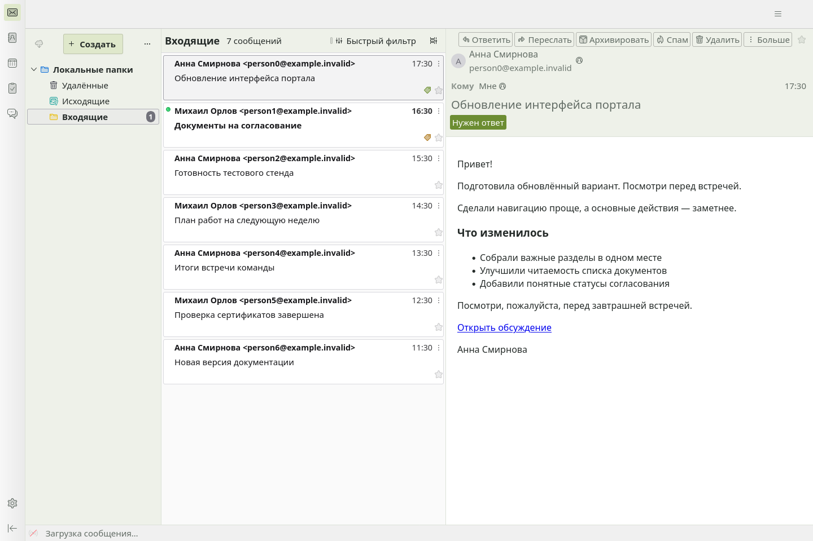
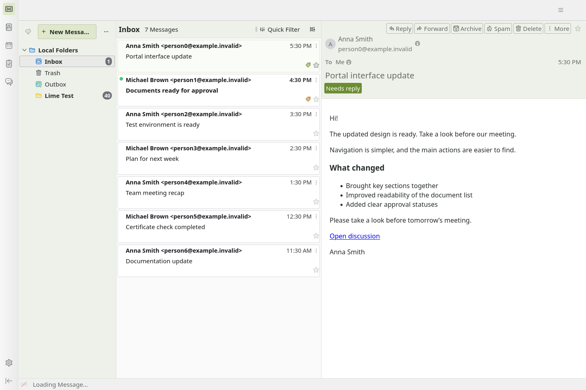
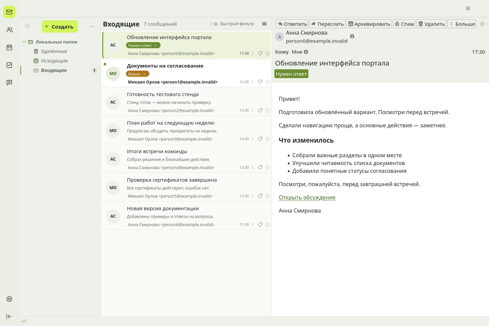
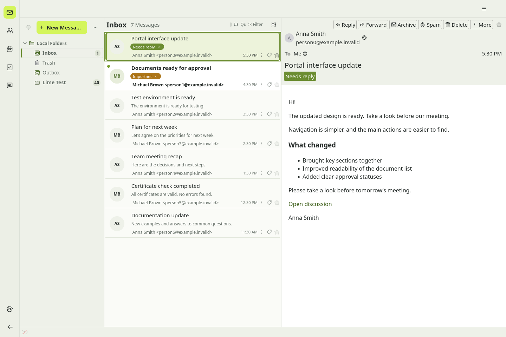

Draft · Предварительный выпускMilk & Lime
Светлая почта. Немного лайма. / A lighter inbox. A little lime.
Настоящие снимки Thunderbird 157.0.1 с вымышленными письмами. Оформление встроено в Lime Mail Cards: ручные CSS не нужны. Conversations — необязательное дополнение. Нажми на снимок, чтобы открыть его полностью.
README на русском · English README · Описания для магазина · Готовность выпуска
Полный комплект с Conversations и аватарами / With Conversations & avatars

Milk & Lime + Cards + Conversations — RU
Настоящая цепочка из трёх писем. Локальные изображения контактов, метки и зелёные ссылки.

Milk & Lime + Cards + Conversations — EN
A real three-message thread. Local contact images, tag chips and green links.
Демонстрационные изображения нарисованы локально и добавлены в адресную книгу. Conversations 4.3.16 установлен отдельно; его исходники не изменены.
Только тема / Theme only

Milk & Lime — RU
Только цвета. Штатный список писем.

Milk & Lime — EN
Color theme. Native message list.
Тема и расширение / Theme + extension

Lime Mail Cards — RU
Инициалы, локальные превью и штатные метки.

Lime Mail Cards — EN
Initials, local previews and native tag chips.
rayout (Alexandr Shapovalov) · MPL-2.0 · Not an official Thunderbird product.